|
Computer Vision Group The Computer Vision Group headed by Prof. Michael Moeller conducts research in the field of mathematical image processing, computer vision, and machine learning. |
{kind=link}
ResearchResearch in computer vision, machine learning, optimization. |
Publications |
2023 |
| 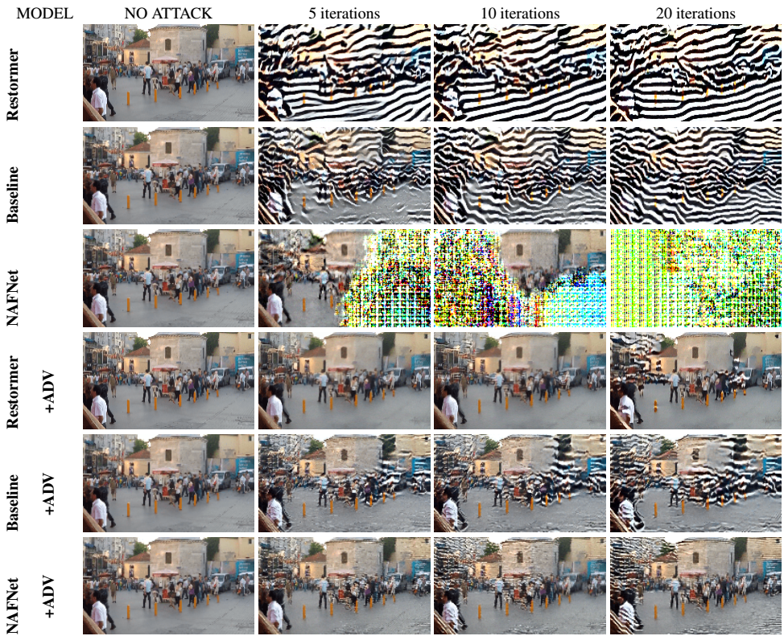 |
On the Unreasonable Vulnerability of Transformers for Image Restoration - and an easy fix
Shashank Agnihotri, Kanchana Vaishnavi Gandikota, Julia Grabinski, Paramanand Chandramouli, Margret Keuper ICCV Workshops, 2023 We show Transformer based restoration networks are not robust, and uncover effects of different attention mechanisms and nonlinearities on adversarially robust generalization. bibtex/arxiv |
|
|
Differentiable Architecture Search: a One-Shot Method?
Jovita Lukasik*, Jonas Geiping*, Michael Moeller Margret Keuper AutoML Conference Workshop, 2023 We investigate differentiable architecture search for the design of novel architectures for inverse problems in a systematic case study. bibtex/arxiv |
| 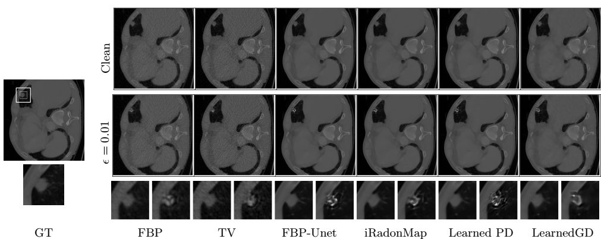 |
Evaluating Adversarial Robustness of Low dose CT Recovery
Kanchana Vaishnavi Gandikota, Paramanand Chandramouli, Hannah Droege, Michael Moeller MIDL, 2023 Adversarial attacks on CT recovery networks can still maintain measurement consistency, and could be used to generate diagnostically different solutions. bibtex/code |
| 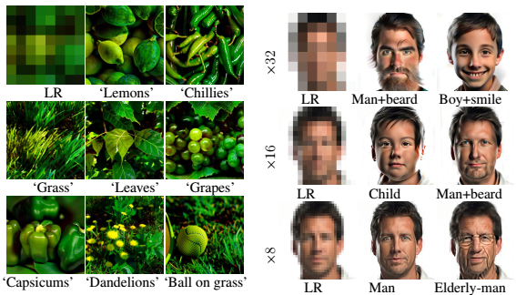 |
Exploring Open Domain Image Super-Resolution through Text
Kanchana Vaishnavi Gandikota*, Paramanand Chandramouli*, ICML 2023 AI & HCI Workshop Exploring solutions of image super-resolution using pretrained text-to-image diffusion models. bibtex |
| 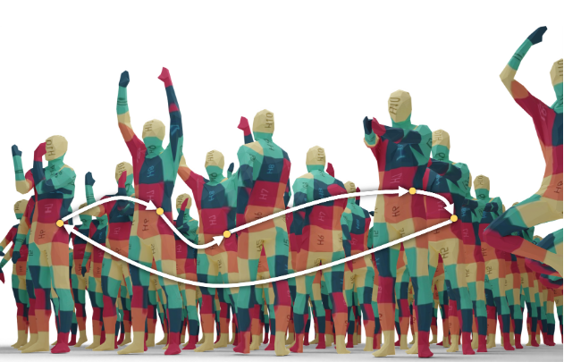 |
CCuantuMM: Cycle-Consistent Quantum-Hybrid Matching of Multiple Shapes
Harshil Bhatia, Edith Tretschk, Zorah Lähner, Marcel Seelbach Benkner, Michael Moeller, Christian Theobalt, Vladislav Golyanik CVPR, 2023 We utilize quantum annealing to solve optimization problems in jointly matching multiple, non-rigidly deformed 3D shapes. bibtex/arxiv/code |
| 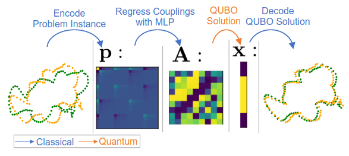 |
QuAnt: Quantum Annealing with Learnt Couplings
Marcel Seelbach Benkner, Maximilian Krahn, Edith Tretschk, Zorah Lähner, Michael Moeller, Vladislav Golyanik ICLR, 2023 In this paper we propose to learn QUBO forms for quantum annealing from data through gradient backpropagation instead of deriving them. As a result, the solution encodings can be chosen flexibly and compactly. bibtex/arxiv/code |
| 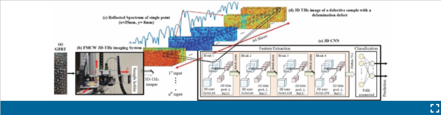 |
Subsurface Defect Detection and Classification in 3D THz Images of Glass Fiber Reinforced Thermoplastic Based on 3D Convolutional Neural Network
Aya Souliman, Yashkumar Darji, Matthias Kahl, Michael Moeller, Peter Haring Bolívar, IRMMW-THz 2023 a 3D convolutional neural network (3D CNN) to classify subsurface defects in a glass fiber reinforced thermoplastic (GFRT) composite material inspected by a 3D THz imaging system. bibtex |
| 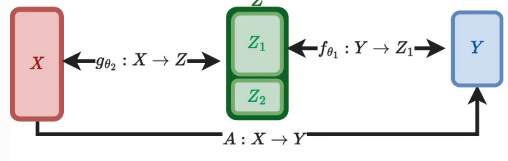 |
Learning Posterior Distributions in Underdetermined Inverse Problems
Christina Runkel, Michael Moeller, Carola-Bibiane Schönlieb, Christian Etmann SSVM 2023 An unpaired learning approach for learning posterior distributions of underdetermined inverse problems using two normalizing flows. bibtex |
2022 |
|
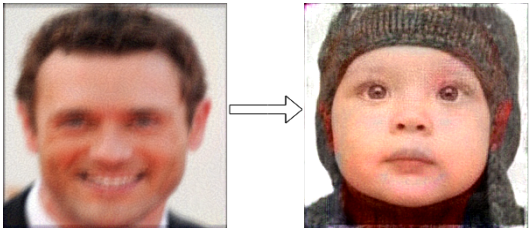
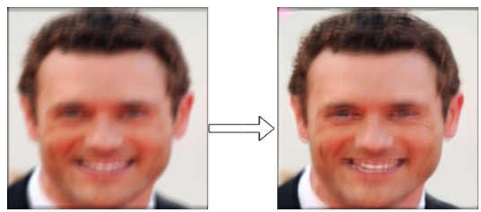
|
On Adversarial Robustness of Deep Image Deblurring
Kanchana Vaishnavi Gandikota, Paramanand Chandramouli, Michael Moeller ICIP, 2022 Imperceptible distortion can significantly degrade the performance of SOTA deblurring networks, even producing drastically different content in the output. bibtex |
| 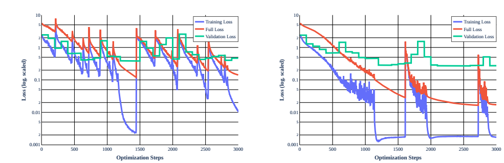 |
Stochastic Training is Not Necessary for Generalization
Jonas Geiping, Micah Goldblum, Phil Pope, Michael Moeller, Tom Goldstein ICLR 2022 Models trained with full-batch gradient descent and explicit regularization can match the generalization performance of models trained with stochastic minibatching. bibtex/code |
| 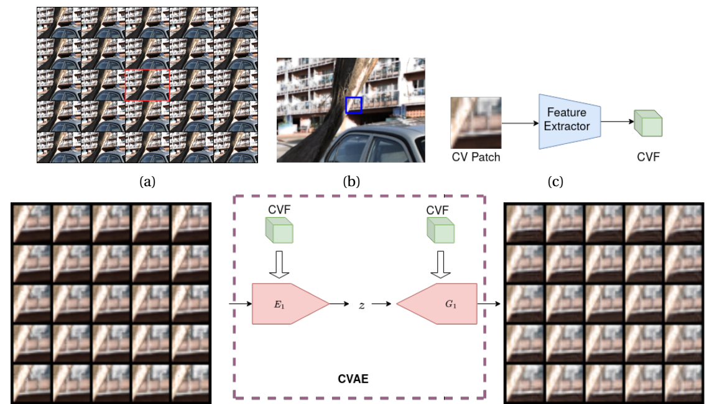 |
A generative model for generic light field reconstruction
Paramanand Chandramouli*, Kanchana Vaishnavi Gandikota*, Andreas Goerlitz, Andreas Kolb, Michael Moeller TPAMI, 2022 We train a generative autoencoder for light fields and use it as a prior for a variety of light field reconstruction tasks. bibtex/arxiv/code |
| 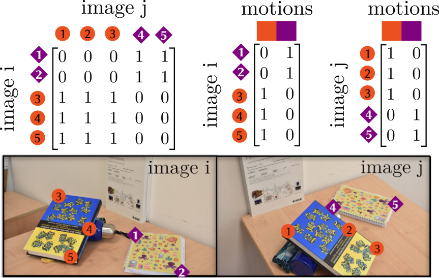 |
Quantum Motion Segmentation
Federica Arrigoni, Willi Menapace, Marcel Seelbach Benkner, Elisa Ricci, Vladislav Golyanik ECCV, 2022 We introduce the first algorithm for motion segmentation that uses quantum annealing. bibtex/arxiv/code |
| 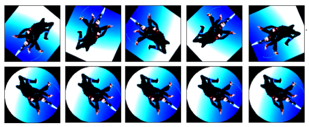 |
A Simple Strategy to Provable Invariance via Orbit Mapping
Kanchana Vaishnavi Gandikota, Jonas Geiping, Zorah Lähner, Michael Moeller ACCV, 2022 We make neural networks invariant by modifying the input pose such that every element from the orbit of transformations maps to the same canonical element.. bibtex/arxiv/code |
| 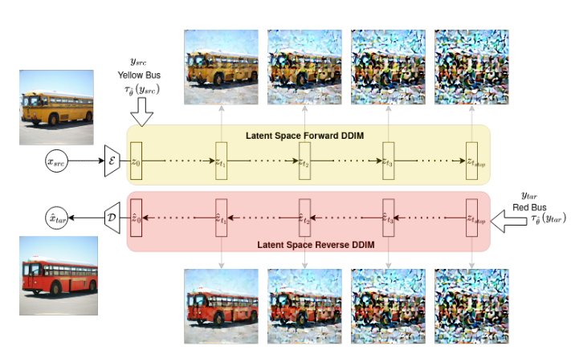 |
LDEdit: Towards generalized text guided image manipulation via latent diffusion models
Paramanand Chandramouli, Kanchana Vaishnavi Gandikota BMVC, 2022 Use Latent Diffusion Models for zero-shot text guided manipulation using DDIM sampling. bibtex/arxiv |
| 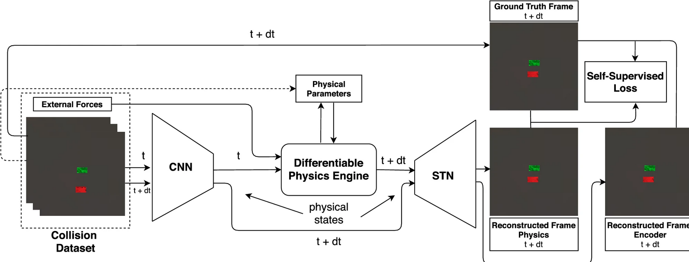 |
Physical Representation Learning and Parameter Identification from Video Using Differentiable Physics
Rama Krishna Kandukuri, Jan Achterhold, Michael Moeller, Joerg Stueckler IJCV, 2022 We investigate the combination of differentiable physics and spatial transformers in a deep action conditional video representation network bibtex |
2021 |
|
Witches' Brew: Industrial Scale Data Poisoning via Gradient Matching
Jonas Geiping, Liam H Fowl, W. Ronny Huang, Wojciech Czaja, Gavin Taylor, Michael Moeller, Tom Goldstein ICLR 2021 Data poisoning attacks that successfully poison neural networks trained from scratch, even on large-scale datasets like ImageNet. bibtex/code |
|
| 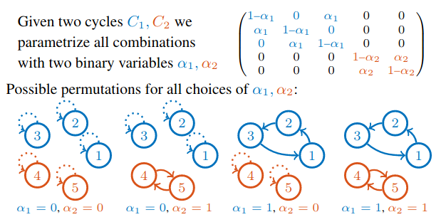 |
Q-Match: Iterative Shape Matching via Quantum Annealing
Marcel Seelbach Benkner, Zorah Lähner, Vladislav Golyanik, Christof Wunderlich, Christian Theobalt, Michael Moeller ICCV, 2021 We develop an iterative method to tackle quadratic assignment problems with quantum annealing. Using this we solve quadratic assignment problems from shape matching. bibtex/arxiv/code |
2020 |
| 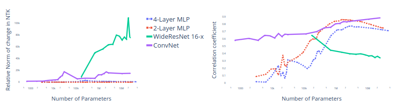 |
Truth or backpropaganda? An empirical investigation of deep learning theory
Micah Goldblum, Jonas Geiping, Avi Schwarzschild, Michael Moeller, Tom Goldstein ICLR 2020 We call into question commonly held beliefs regarding the loss landscape, optimization, network width, and rank. bibtex/code |
2019 |
| 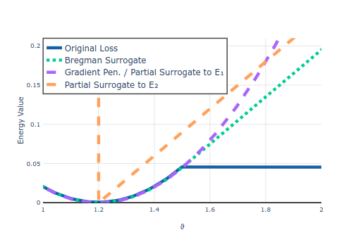 |
Parametric Majorization for Data-Driven Energy Minimization Methods
Jonas Geiping, Michael Moeller ICCV 2019 A new strategy to optimize the bi-level problems arising in training parameterized energy minimization models. bibtex/code |
2018 |
| 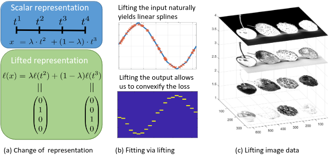 |
Lifting Layers: Analysis and Applications
Peter Ochs, Tim Meinhardt, Laura Leal-Taixe, Michael Moeller ECCV 2018 We propose a novel non-linear transfer function called lifting, perform theoretical analysis of lifting layer and demonstrate its effectiveness in deep learning approaches to image classification and denoising. arxiv/bibtex/code |
2017 |
| 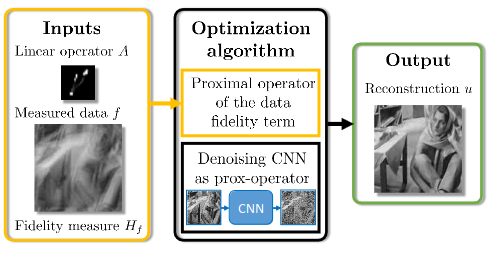 |
Learning proximal operators: Using denoising networks for regularizing inverse imaging problems
Tim Meinhardt, Michael Moeller, Caner Hazirbas, Daniel Cremers ICCV 2017 We replace the proximal operator of the regularization used in many convex energy minimization algorithms by a denoising neural network which serves as an implicit natural image prior. arxiv/bibtex/code |
2016 |
| 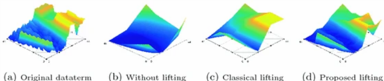 |
Sublabel-Accurate Convex Relaxation of Vectorial Multilabel Energies
Emanuel Laude, Thomas Möllenhoff, Michael Moeller, Jan Lellmann, Daniel Cremers ECCV 2016 We propose the first sub-label accurate convex relaxation for vectorial multilabel problems by approximating the dataterm in a piecewise convex (rather than piecewise linear) manner. arxiv/bibtex/code |